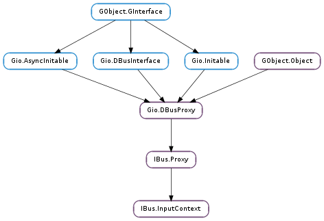

| static | get_input_context(path, connection) |
| static | get_input_context_async(path, connection, cancellable, callback, *user_data) |
| static | get_input_context_async_finish(res) |
| static | new(path, connection, cancellable) |
| static | new_async(path, connection, cancellable, callback, *user_data) |
| static | new_async_finish(res) |
| cancel_hand_writing(n_strokes) | |
| focus_in() | |
| focus_out() | |
| get_engine() | |
| get_engine_async(timeout_msec, cancellable, callback, *user_data) | |
| get_engine_async_finish(res) | |
| needs_surrounding_text() | |
| process_hand_writing_event(coordinates, coordinates_len) | |
| process_key_event(keyval, keycode, state) | |
| process_key_event_async(keyval, keycode, state, timeout_msec, cancellable, callback, *user_data) | |
| process_key_event_async_finish(res) | |
| property_activate(prop_name, state) | |
| reset() | |
| set_capabilities(capabilities) | |
| set_content_type(purpose, hints) | |
| set_cursor_location(x, y, w, h) | |
| set_engine(name) | |
| set_surrounding_text(text, cursor_pos, anchor_pos) |
None
| Name | Parameters | Return | Description |
|---|---|---|---|
| commit-text | IBus.Text | Emitted when the text is going to be committed. (Note: The text object is floating, and it will be released after the signal. If singal handler want to keep the object, the handler should use GObject.Object.ref_sink () to get the ownership of the object.) | |
| cursor-down-lookup-table | Emitted to select next candidate of lookup table. | ||
| cursor-up-lookup-table | Emitted to select previous candidate of lookup table. | ||
| delete-surrounding-text | int, int | Emitted to delete surrounding text event from IME to client of IME. | |
| disabled | Emitted when an IME is disabled. | ||
| enabled | Emitted when an IME is enabled. | ||
| forward-key-event | int, int, int | Emitted to forward key event from IME to client of IME. | |
| hide-auxiliary-text | Emitted to hide auxiliary text. | ||
| hide-lookup-table | Emitted to hide lookup table. | ||
| hide-preedit-text | Emitted to hide preedit text. | ||
| page-down-lookup-table | Emitted to view the next page of lookup table. | ||
| page-up-lookup-table | Emitted to view the previous page of lookup table. | ||
| register-properties | IBus.PropList | Emitted to register the properties in props. (Note: The props object is floating, and it will be released after the signal. If singal handler want to keep the object, the handler should use GObject.Object.ref_sink () to get the ownership of the object.) | |
| show-auxiliary-text | Emitted to show auxiliary text. | ||
| show-lookup-table | Emitted to show lookup table. | ||
| show-preedit-text | Emitted to show preedit text. | ||
| update-auxiliary-text | IBus.Text, bool | Emitted to hide auxilary text. (Note: The text object is floating, and it will be released after the signal. If singal handler want to keep the object, the handler should use GObject.Object.ref_sink () to get the ownership of the object.) | |
| update-lookup-table | IBus.LookupTable, bool | Emitted to update lookup table. (Note: The table object is floating, and it will be released after the signal. If singal handler want to keep the object, the handler should use GObject.Object.ref_sink () to get the ownership of the object.) | |
| update-preedit-text | IBus.Text, int, bool | Emitted to update preedit text. (Note: The text object is floating, and it will be released after the signal. If singal handler want to keep the object, the handler should use GObject.Object.ref_sink () to get the ownership of the object.) | |
| update-property | IBus.Property | Emitted to update the property prop. (Note: The prop object is floating, and it will be released after the signal. If singal handler want to keep the object, the handler should use GObject.Object.ref_sink () to get the ownership of the object.) |
| Name | Type | Access |
|---|---|---|
| parent | IBus.Proxy | r |
Bases: IBus.Proxy
An IBus.InputContext is a proxy object of BusInputContext, which manages the context for input methods that supports text input in various natural languages.
Clients call the IBus.InputContext to invoke BusInputContext, through which invokes IBus.Engine.
| Parameters: |
|
|---|---|
| Returns: | An existing IBus.InputContext. |
| Return type: |
Gets an existing IBus.InputContext.
| Parameters: |
|
|---|
Get an existing IBus.InputContext asynchronously.
| Parameters: | res (Gio.AsyncResult) – A Gio.AsyncResult obtained from the Gio.AsyncReadyCallback pass to IBus.InputContext.get_input_context_async (). |
|---|---|
| Raises: | GLib.GError |
| Returns: | An existing IBus.InputContext. |
| Return type: | IBus.InputContext |
Finishes an operation started with ibus_input_contex_get_input_context_async().
| Parameters: |
|
|---|---|
| Raises: | |
| Returns: | A newly allocated IBus.InputContext. |
| Return type: |
New an IBus.InputContext.
| Parameters: |
|
|---|
New an IBus.InputContext asynchronously.
| Parameters: | res (Gio.AsyncResult) – A Gio.AsyncResult obtained from the Gio.AsyncReadyCallback pass to IBus.InputContext.new_async (). |
|---|---|
| Raises: | GLib.GError |
| Returns: | A newly allocated IBus.InputContext. |
| Return type: | IBus.InputContext |
Finishes an operation started with IBus.InputContext.new_async ().
| Parameters: | n_strokes (int) – The number of strokes to be removed. Pass 0 to remove all. |
|---|
Clear handwriting stroke(s) in the current input method engine.
see_also: IBus.Engine ::cancel-hand-writing
Invoked when the client application get focus. An asynchronous IPC will be performed.
see_also: IBus.Engine ::focus-in.
Invoked when the client application get focus. An asynchronous IPC will be performed.
see_also: IBus.Engine ::focus-out.
| Returns: | An IME engine description for the context, or None. |
|---|---|
| Return type: | IBus.EngineDesc |
Returns an IME engine description for the context. A synchronous IPC will be performed.
| Parameters: |
|
|---|
An asynchronous IPC will be performed.
| Parameters: | res (Gio.AsyncResult) – A Gio.AsyncResult obtained from the Gio.AsyncReadyCallback passed to IBus.InputContext.get_engine_async (). |
|---|---|
| Raises: | GLib.GError |
| Returns: | An IME engine description for the context, or None. |
| Return type: | IBus.EngineDesc |
Finishes an operation started with IBus.InputContext.get_engine_async ().
| Returns: | True if surrounding-text is needed by the current engine; False otherwise. |
|---|---|
| Return type: | bool |
Check whether the current engine requires surrounding-text.
| Parameters: |
|---|
Pass a handwriting stroke to an input method engine.
In this API, a coordinate (0.0, 0.0) represents the top-left corner of an area for handwriting, and (1.0, 1.0) does the bottom-right. Therefore, for example, if a user writes a character ‘L’, the array would be something like [0.0, 0.0, 0.0, 1.0, 1.0, 1.0] and coordinates_len would be 6.
The function is usually called when a user releases the mouse button in a hand writing area.
see_also: IBus.Engine ::process-hand-writing-event
| Parameters: | |
|---|---|
| Returns: | |
| Return type: |
Pass the key event to input method engine and wait for the reply from ibus (i.e. synchronous IPC).
See also: IBus.InputContext.process_key_event_async ()
| Parameters: |
|
|---|
Pass the key event to input method engine.
Key symbols are characters/symbols produced by key press, for example, pressing “s” generates key symbol “s”; pressing shift-“s” generates key symbol “S”. Same key on keyboard may produce different key symbols on different keyboard layout. e.g., “s” key on QWERTY keyboard produces “o” in DVORAK layout.
Unlike key symbol, keycode is only determined by the location of the key, and irrelevant of the keyboard layout.
Briefly speaking, input methods that expect certain keyboard layout should use keycode; otherwise keyval is sufficient. For example, Chewing, Cangjie, Wubi expect an en-US QWERTY keyboard, these should use keycode; while pinyin can rely on keyval only, as it is less sensitive to the keyboard layout change, DVORAK users can still use DVORAK layout to input pinyin.
Use IBus.Keymap.lookup_keysym () to convert keycode to keysym in given keyboard layout.
see_also: IBus.Engine ::process-key-event
| Parameters: | res (Gio.AsyncResult) – A Gio.AsyncResult obtained from the Gio.AsyncReadyCallback passed to IBus.InputContext.process_key_event_async (). |
|---|---|
| Raises: | GLib.GError |
| Returns: | True if the key event is processed; False otherwise or some errors happen and the error will be set. |
| Return type: | bool |
Finishes an operation started with IBus.InputContext.process_key_event_async ().
| Parameters: |
|
|---|
Activate the property asynchronously.
See also: IBus.Engine ::property-activate
Invoked when the IME is reset. An asynchronous IPC will be performed.
see_also: IBus.Engine ::reset
| Parameters: | capabilities (int) – Capabilities flags of IBus.Engine, see IBus.Capabilite |
|---|
Set the capabilities flags of client application asynchronously. When IBus.Capabilite.FOCUS is not set, IBus.Capabilite.PREEDIT_TEXT, IBus.Capabilite.AUXILIARY_TEXT, IBus.Capabilite.LOOKUP_TABLE, and IBus.Capabilite.PROPERTY have to be all set. The panel component does nothing for an application that doesn’t support focus.
see_also: IBus.Engine ::set-capabilities
| Parameters: |
|
|---|
Set content-type (primary purpose and hints) of the context. This information is particularly useful to implement intelligent behavior in engines, such as automatic input-mode switch and text prediction. For example, to restrict input to numbers, the client can call this function with purpose set to IBus.InputPurpose.NUMBER.
See also: IBus.Engine ::set-content-type
| Parameters: |
|---|
Set the cursor location of IBus input context asynchronously.
see_also: IBus.Engine ::set-cursor-location